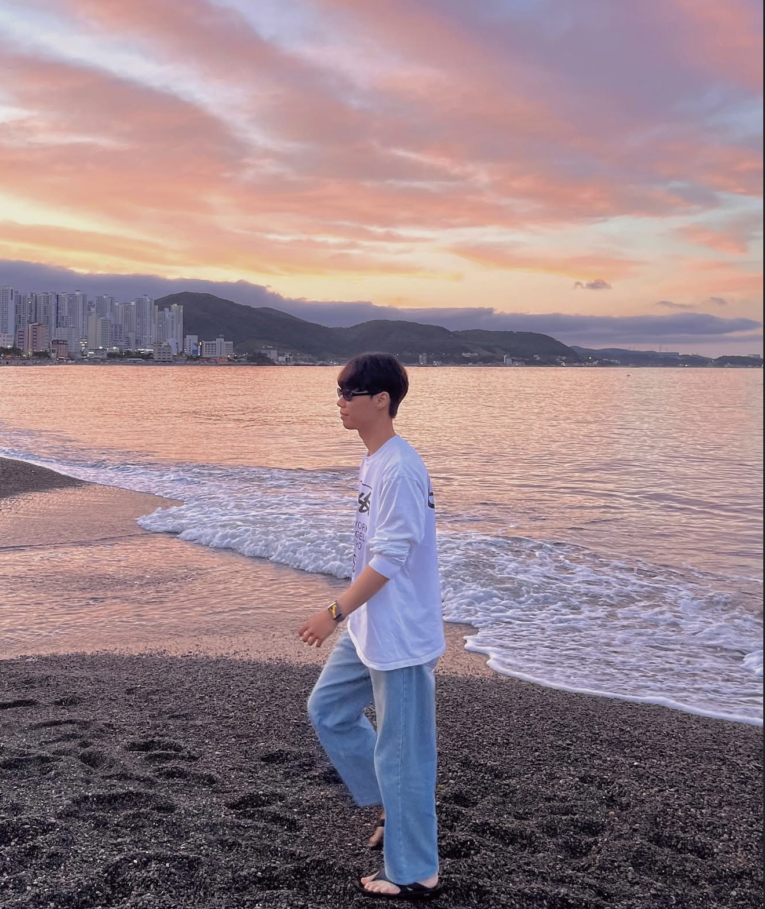

안녕하세요 최인호입니다 😊
단기적인 성과보다 지속적인 성장을 중요하게 생각합니다.
문제를 혼자 붙잡기보다 구조를 나누고, 근거를 세워 해결하는 과정을 선호합니다.
처음 겪는 문제라도 일단 시도해 보고 직접 부딪히면서 배우는 편입니다.
경험이 없다는 이유로 멈추기보다 작은 실험을 통해 이해하고 해결 방법을 찾아갑니다.
업무 중 마주한 문제를 그대로 넘기지 않고 원인을 정리하고 기록하며, 작은 개선을 반복해 시스템의 안정성과 완성도를 높여왔습니다.
100m 단거리보다 마라톤처럼, 매일 조금씩 개선을 쌓아가며 더 나은 백엔드 개발자로 성장하는 것이 목표입니다.
기술 스택
경력
- 관제 시스템 기능 개발
- HLS 기반 멀티 스트리밍 구조 설계
- FFmpeg 인코딩 옵션 최적화
- YOLO 기반 얼굴 블러 처리 구현
- ResNet 기반 비명 감지 모델 실험
문제 해결 경험
핵심 요약을 먼저 보여주고, 더보기를 누르면 실제 문제 해결 과정과 기술적 판단을 자세히 볼 수 있습니다.
WebRTC 기반 실시간 비전 파이프라인 최적화 사례
- WebRTC ABR 환경에서 해상도 변동으로 인한 영상 파이프라인 오류 해결
- OpenCV Letterbox 기반 입력 정규화 및 제어 API 분리 설계
- 실시간 영상 처리 안정성 확보 및 누적 지연 30% 이상 개선
더보기
기존 RTSP 입력 스트림 파이프라인은 입력 해상도가 항상 일정하다는 전제로 설계되었습니다.
그러나 실제 운영 환경인 WebRTC의 적응형 비트레이트(ABR) 조건에서는 네트워크 대역폭에 따라 해상도가 실시간으로 변동되었습니다.
이로 인해 FFmpeg swscaler 에러(Slice parameters invalid), 프레임 버퍼 꼬임, 화면 깨짐 및 누적 지연이 발생하여 실시간 관제 시스템의 가용성이 저하되는 문제를 마주했습니다.
첫째, 런타임 해상도 감지 및 데이터 정규화 로직 도입
모든 가변 입력 프레임을 OpenCV Letterbox 알고리즘을 거쳐 1280x720 규격으로 강제 정규화했습니다. 이를 통해 후속 AI 추론 모델과 송출 레이어에 전달되는 데이터의 정합성을 100% 확보했습니다.
둘째, 파이프라인 제어 계층(Control Plane) 분리 설계
FastAPI 기반의 별도 제어 API를 구축하여 스트림 상태를 실시간 모니터링하고, 해상도 변경 등 주요 이벤트 발생 시 프로세스 전체 중단 없이 안전하게 설정을 갱신하거나 재연결할 수 있도록 아키텍처를 개선했습니다.
셋째, 미디어 엔진 튜닝 및 지연 억제
FFmpeg의 zerolatency 옵션과 입력 FPS 변화에 연동되는 동적 GOP(Group of Pictures) 설정을 적용했습니다. 이를 통해 타임스탬프 동기화 오류를 해소하고, 실시간 스트리밍의 핵심 지표인 누적 지연 시간을 기존 대비 30% 이상 개선했습니다.
가변적인 네트워크 환경에서도 24시간 중단 없는 실시간 비전 시스템의 안정성을 확보했습니다.
이 과정에서 단순 기능 구현을 넘어, 실시간 시스템의 예외 처리 전략과 변동성에 대응하는 유연한 백엔드 아키텍처 설계 역량을 증명했습니다.
HLS 기반 다중 영상 동기화 스트리밍 파이프라인 구축
- 대용량 영상 동시 재생 시 발생하는 초기 지연 및 버퍼링 문제 해결
- Codec Copy와 Re-encode 비교를 통한 인코딩 전략 최적화
- 고화질 영상 5개 동시 재생 환경에서 1초 미만 Seek 지연 구현
더보기
가변적인 개수의 대용량 영상(CAM 데이터, 파일당 약 928MB)을 웹 브라우저에서 동시 재생하고 제어해야 하는 요구사항이 있었습니다.
기존 단일 MP4 방식은 전체 파일을 로딩해야 하므로 5개 이상의 영상을 동시 로드할 때 초기 지연과 버퍼링이 심각했습니다.
이를 해결하기 위해 영상을 작은 조각으로 나누어 전송하는 HLS(HTTP Live Streaming) 프로토콜을 채택했습니다. HLS는 세그먼트 단위 로딩을 통해 초기 로딩 속도를 높이고, 네트워크 상황에 유연하게 대응할 수 있어 다중 영상 동기화에 가장 적합한 선택이었습니다.
첫째, 변환 방식의 트레이드오프 분석 및 최적화
변환 속도가 빠른 'Codec Copy' 방식(약 12초)과 정밀한 제어가 가능한 'Re-encode' 방식(약 75초)을 비교 실험했습니다. 분석 결과, Codec Copy는 원본의 불규칙한 GOP 간격으로 인해 Seek(탐색) 시 정확도가 떨어지고 세그먼트 크기가 커서 버퍼링이 발생했습니다. 반면, Re-encode 방식은 비록 변환 시간은 길지만 세그먼트 크기를 1/10 수준(29MB -> 2.6MB)으로 줄이고 GOP 경계를 일치시켜 정확한 동기화 재생이 가능함을 확인했습니다. 사용자 경험을 위해 Re-encode 방식을 최종 채택했습니다.
둘째, Semaphore를 활용한 동시 처리 및 아키텍처 개선
기존 Python Worker 방식의 높은 CPU 부담과 동시 처리 제한 문제를 해결하기 위해 Java 기반 서비스로 리팩토링했습니다. Semaphore를 도입하여 서버 자원 상황에 맞게 동시 인코딩 개수를 제한함으로써 시스템 다운을 방지했습니다. 또한 -sc_threshold 0, -g 120 등의 FFmpeg 옵션을 적용해 세그먼트 경계와 키프레임을 강제로 정렬하여, Seek 조작 시 모든 영상이 오차 없이 동일한 시점을 표시하도록 구현했습니다.
셋째, 인프라 비용 및 운영 효율 고려
AWS MediaConvert 등의 클라우드 솔루션을 검토했으나, 지속적인 대용량 영상 처리 비용 부담을 고려하여 S3와 CloudFront 조합 혹은 자체 스트리밍 서버 구축을 통한 최적의 비용 효율 지점을 도출했습니다. 이를 통해 서비스 규모와 예산에 맞는 현실적인 아키텍처를 설계했습니다.
결과적으로 GB단위의 고화질 영상 5개를 동시에 로드하고, 10초 전후 이동이나 재생/정지 등의 제어를 1초 미만의 지연으로 수행하는 동기화 플레이어 환경을 구축했습니다.
단순히 기술을 도입하는 것에 그치지 않고, 성능 테스트를 통해 얻은 구체적인 데이터(초기 로딩 시간, 세그먼트 크기 등)를 근거로 최적의 인코딩 전략을 수립하는 미디어 백엔드 역량을 확보했습니다.
MSA 기반 스마트 오피스 통합 인프라 및 관측 지표 설계
- 분산 환경에서 설정 불일치와 장애 추적 어려움 해결
- TraceId 기반 공통 로그 모듈 및 ELK 관측 체계 구축
- 평균 장애 분석 시간(MTTR) 80% 이상 단축
더보기
8인의 개발자가 가변적인 서비스들을 개발하면서, 로컬 환경의 설정이 배포 환경에 반영되지 않아 발생하는 런타임 에러가 반복되었습니다.
특히 서비스 간 호출 시 어느 구간에서 지연이나 실패가 발생하는지 알 수 없는 '분산 시스템의 비가시성' 문제가 시스템 안정성의 최대 걸림돌이었습니다.
가설 1: 고유 요청 ID(TraceId)를 전파하고 로그 규격을 모듈화하여 라이브러리 형태로 강제하면, 전체 서비스의 호출 흐름을 단일 타임라인으로 시각화할 수 있을 것이다.
가설 2: 설정 정보를 코드화하여 외부 주입(Config Server) 방식으로 단일화하면, 환경 불일치로 인한 장애를 원천 차단하고 '결정론적 배포'가 가능할 것이다.
첫째, 커스텀 로그 추적 모듈(trace-logger-module) 설계 및 전파
기존의 파편화된 로깅 형식을 해결하기 위해, 모든 요청의 인입부터 종료까지 TraceId를 생성하고 response_time을 자동 계산하는 AOP 공통 모듈을 직접 설계했습니다. 단순 가이드 제공이 아닌, 8인의 팀원이 즉시 적용할 수 있도록 JitPack을 이용해 라이브러리로 배포했습니다. 이를 통해 모든 서비스가 의존성 한 줄만으로 동일한 인터페이스의 로그를 생성하게 만들었으며, 이는 ELK 스택에서 데이터 정합성을 맞추는 근본적인 장치가 되었습니다.
둘째, ELK 파이프라인 구축 및 시계열 데이터 동기화 검증
Filebeat-Logstash-Elasticsearch 파이프라인을 구축하여 분산된 컨테이너 로그를 중앙 집계했습니다. 검증 과정에서 컨테이너 간 타임존(TZ) 불일치로 로그 순서가 어긋나는 문제를 발견했습니다. 이를 해결하기 위해 모든 Docker 환경의 TZ를 동기화하고 Logstash 필터 튜닝을 통해, Kibana 대시보드에서 1ms 단위의 정밀한 요청 흐름 추적(Tracing)이 가능함을 실험적으로 증명했습니다.
셋째, Spring Cloud Config 및 GitHub Actions를 통한 설정 관리 표준화
로컬 properties와 GitHub Secret 간의 설정 충돌을 해결하기 위해 Config Server를 구축했습니다. 모든 민감 정보와 환경 변수를 중앙에서 관리하고, GitHub Actions를 통해 '어떤 서비스든 동일한 배포 파이프라인'을 타도록 구조화했습니다. 이를 통해 환경 변수 누락으로 인한 배포 실패율을 0%로 낮췄습니다.
넷째, 쾌적도 측정 AI 모델의 서비스 인프라 통합
단순 AI 모델 개발에 그치지 않고, 수집된 환경 데이터를 AI 모델이 실시간으로 처리할 수 있도록 인프라 레이어에 통합했습니다. AI 연산 부하가 전체 파이프라인 지연에 미치는 영향을 모니터링하며, 인프라 엔진으로서 AI 서비스의 안정적 가동을 지원했습니다.
장애 발생 시 '각 서버 로그 파일 수동 탐색' 방식을 'TraceId 기반 중앙 집중 검색'으로 혁신하여 평균 장애 분석 시간(MTTR)을 80% 이상 단축했습니다.
인프라 총괄로서 개별 개발자가 인프라 설정이 아닌 비즈니스 로직에만 집중할 수 있는 '신뢰 가능한 공통 인프라 레이어'를 제공하는 성과를 거두었습니다.
비명 감지 AI 모델 및 실시간 음성 이벤트 감지 파이프라인 구축
- 비명 감지 및 응급 상황 감지 음성 DL 모델 설계
- FFT 특징 추출과 Noise Injection을 적용한 ResNet 모델 개발
- AI 기능을 기존 영상 관제 시스템에 실제 서비스로 통합
더보기
기존 영상 관제(VMS) 솔루션에 최초로 AI 기능을 도입하는 과정에서, 단순히 모델을 이식하는 수준을 넘어 실시간 환경의 변동성을 제어하는 서비스 파이프라인 구축이 필요했습니다.
특히 오픈 데이터로 학습한 비명 감지 및 응급 상황 감지 모델은 실제 현장의 소음과 입력 패턴 차이로 인해 성능 저하가 발생할 수 있었고, 이를 해결해 운영 가능한 수준으로 만드는 것이 핵심 과제였습니다.
저는 데이터 수집, 모델링, 전처리, 실시간 서빙 파이프라인 설계, 운영 제어 API 구축에 이르는 전 과정을 주도했습니다.
첫째, 도메인 시프트(Domain Shift) 극복을 위한 입출력 정규화 및 모델링
오픈 데이터로 학습한 모델과 실제 운영 환경 사이의 분포 차이를 줄이기 위해, 다양한 실제 환경 음성을 수집하고 입력 특성을 분석했습니다. FFT(고속 푸리에 변환) 기반 특징 추출 로직을 설계하여 입력을 정규화했고, Noise Injection으로 모델의 강건성을 확보한 ResNet 18/34 기반 비명 감지 모델을 직접 구축했습니다. WandB 기반 실험 관리로 하이퍼파라미터 변화에 따른 지연 시간과 오탐률의 상관관계를 데이터로 검증하며 운영 가능한 최적의 모델을 선택했습니다.
둘째, 실시간 추론 파이프라인 및 운영 제어 체계 구축
단순 추론 결과 반환을 넘어, 실시간 서비스에 적용 가능한 형태로 음성 이벤트 감지 파이프라인을 설계했습니다. FastAPI 기반 제어 API를 구축하여 설정 변경, 상태 확인, 재시작 제어가 가능하도록 했고, 실제 운영 환경에서도 안정적으로 동작할 수 있는 구조를 마련했습니다.
셋째, 서비스 통합 관점의 AI 기능 설계
모델 하나를 만드는 데 그치지 않고, 기존 영상 관제 시스템 안에서 다른 기능들과 함께 운영될 수 있도록 전체 구조를 고려했습니다. 이를 통해 AI 기능을 단독 PoC가 아닌 실제 서비스 기능으로 통합할 수 있는 기반을 마련했습니다.
비명 감지 모델은 스마트 규제 샌드박스 사업에 적용되어 실제 납품되는 성과로 이어졌습니다.
이 경험을 통해 데이터 수집부터 모델 학습, 실시간 추론 파이프라인 설계, 운영 제어 구조 구성까지 AI 기능을 서비스 단위로 완성하는 엔지니어링 역량을 확보했습니다.
학력 · 교육 · 활동
영산대학교
AI컴퓨터공학과 (융합전공 스마트제조ICT)
학점 4.08 / 4.5
NHN Academy AIOT 2기
- 소프트웨어 분석과 설계, 프로그램 추상화, Java 객체 모델 학습
- IoT 센서 데이터 수집 · 전송 · 실시간 처리 구조 학습
- 확률 · 통계 기반 AI/머신러닝 기초 및 Python 데이터 처리
- Spring MVC · JPA · Spring Boot 기반 웹 서비스 개발
- IoT 미니 프로젝트: 센서 데이터 수집 및 자동 제어 시스템 구현
- AI 미니 프로젝트: Iris 분류 모델 및 공공데이터 예측 모델 구현
스마트 오피스 프로젝트
- Spring Cloud(Eureka, Config, Gateway) 기반 MSA 인프라 구축
- Spring Boot 기반 마이크로서비스 개발 및 서비스 간 통신 구조 설계
- GitHub Actions 기반 CI/CD 파이프라인 구축 및 자동 배포 환경 구성
- ELK(Filebeat · Logstash · Elasticsearch) 기반 중앙 로그 수집 파이프라인 구축
- MQTT 기반 센서 데이터 수집 및 InfluxDB 연동 데이터 처리 구조 구현
- K-means 기반 환경 데이터 분석 및 쾌적도(CEI) 지표 실험
대학 프로젝트 · 연구 과제
- DAQ 기반 볼트 크랙 판단 AI 서비스 개발 (Logistic 회귀)
- Node‑Blue 데이터 파이프라인 구축
- AI 기반 재난 대피소 웹 서비스
- 점자 해석 AI 애플리케이션